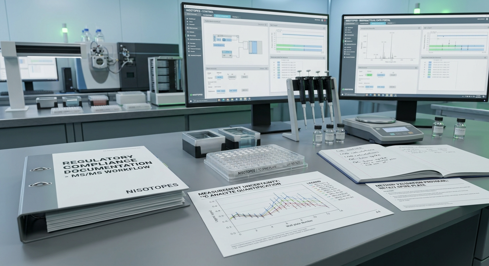

We turn your equipment into pipetting robots (compatible with most vendor autosamplers). Nisotopes bridges stable isotope dilution mass spectrometry with automated liquid handling and turnkey ISO 17025 validation frameworks[cite: 3].
Validated automation scripts tailored for major liquid handlers to eliminate batch-to-batch CV variance[cite: 2].

Qualify™ Framework
Complete regulatory and GUM uncertainty compliance packages built for early-stage biopharma & CROs[cite: 3].
Targeted Assay Kits
Pre-formulated stable isotope dilution mass spectrometry (IDMS) standards.
13C Stable Isotope Plates™
High-purity isotopic spikes pre-formatted in 96-well microplate configurations with matrix barcodes[cite: 1]. These plates turn your standard laboratory setup into automated pipetting workstations, eliminating manual pipetting steps and reducing sample preparation variance[cite: 2].
Lyophilized Precision: Pre-measured 13C-labeled internal standard cakes optimized for instant reconstitution and minimal volumetric error[cite: 1].
Matrix Barcoding: Integrated 2D and linear barcodes for seamless, error-free sample tracking across high-throughput LC-MS/MS and AEMS runs[cite: 1].
Universal Autosampler Ready: Formatted to drop directly into standard microplate nests, ensuring full compatibility with major vendor autosamplers and liquid handlers[cite: 2].
Tailor-made internal standard mixtures synthesized to meet specialized biopharma quantitation demands. Whether you are quantifying therapeutic oligonucleotides, complex cyclic peptides, or intact protein biomarkers, our custom synthesis workflow delivers isotopically enriched reference standards matched precisely to your target compounds[cite: 3].
High Isotopic Enrichment: Customized stable isotope labeling (13C, 15N, 2H, 18O) achieving >99 atom % enrichment to eliminate spectral overlap in tandem mass spectrometry (MS2)[cite: 3].
Multiplexed Internal Standards: Co-formulated multi-analyte spike cocktails engineered for single-injection internal calibration across complex bioanalytical panels.
Flexible Format Delivery: Supplied as custom-formatted liquid concentrates, single-use vials, or pre-dispensed 96/384-well microplate layouts ready for automated liquid handler integration[cite: 1, 2].
Rigorous Certificate of Analysis (CoA): Complete structural characterization via high-resolution mass spectrometry (HRMS), NMR, HPLC purity analysis, and GUM uncertainty evaluation[cite: 3].
Auto-Calibration Standards™
Calibrated reference standards designed for direct integration into automated sample prep decks[cite: 2]. Pre-weighed and certified to precise concentration gradients, these standards streamline multi-point IDMS linear regression setup and remove manual dilution steps on robotic liquid handlers[cite: 2].
Pre-Calculated Amount Ratios (nref / nIS): Standardized concentrations paired with matching isotopic standards for direct export into the Nisotopes IDMS Calculator[cite: 1, 2].
Automated Deck Ready: Standard SBS-format reservoirs and microplates engineered for seamless gripping, barcode scanning, and liquid transfer across all major autosamplers[cite: 2].
Certified Traceability: Formulated using gravimetric preparation with ISO 17025 accredited gravimetric balances and NIST/BIPM traceable reference materials[cite: 3].
Minimal Reconstitution Drift: Rapid-dissolution matrices ensure homogenous mixing within seconds of solvent addition on automated shaker nests[cite: 2].
Isotopic Purity Certificates™
Guaranteed isotopic enrichment (>99 atom % 13C) provided with comprehensive GUM-compliant uncertainty documentation[cite: 3]. Our Certificates of Analysis (CoA) deliver rigorous, metrologically traceable validation required for high-precision IDMS and GLP-compliant quantitative assays[cite: 3].
High-Resolution HRMS Verification: Full isotopic fine structure characterized on high-resolution mass spectrometers to accurately map isotopologue distributions and un-labeled mass spectral overlap[cite: 3].
GUM Uncertainty Budgets: Complete evaluation of combined measurement uncertainty according to the ISO/BIPM Guide to the Expression of Uncertainty in Measurement (GUM)[cite: 3].
Quantitative NMR (qNMR) Traceability: Chemical purity and absolute molar concentration validated using qNMR against NIST-traceable primary reference standards[cite: 3].
Turnkey Audit Documentation: PDF/A-formatted digital certificates with embedded raw data exports, ready for direct attachment to ISO 17025 and FDA 21 CFR Part 11 regulatory filings[cite: 3].
Quality Control Pools
Lyophilized biological matrix QC samples for long-term quantitative monitoring in GLP environments.
Method Validation Kits
Pre-formatted validation plates engineered to measure recovery, matrix effects, and linearity in accordance with FDA/EMA guidelines[cite: 3].
Custom Matrix Diluents
Surrogate matrices formulated to match human serum, plasma, or cell lysate viscosity and ion-suppression characteristics.
Automated Deck Integration
Seamless liquid handler protocols designed for high-throughput MS.
Turnkey Automation Protocols
Our AutoScript™ library plugs directly into modern automated liquid handlers and vendor autosamplers[cite: 2], turning standard laboratory equipment into reliable pipetting robots for hands-free internal standard spiking, serial dilutions, and plate preparation with minimal operator intervention[cite: 2].
IDMS Calibration & Quantitation Workstation
Calibrate using amount ratio nref / nIS, view linear regression curves with adjustable SD/SEM error bars, and interpolate unknown samples.
Enter a 1-letter peptide sequence (e.g., ACDEF, GFF) to automatically generate its SMILES string and structure.
Presets:
SMILES String & 2D/3D Structure Preview
Small Molecule Presets:
Structure Viewport
Monoisotopic Mass (Da)
180.0423
Average Mass (Da)
180.157
[M+H]+ Adduct (m/z)
181.0495
Molecular Formula
C9H8O4
ISO 17025 & Regulatory Support
Qualify™ validation packages built for bioanalytical compliance.
Turnkey Audit Readiness
We provide full measurement uncertainty evaluations, GUM-compliant calculation frameworks, and ISO 17025 documentation kits to streamline your CRO or lab accreditation process[cite: 3].
Partner With Nisotopes
Request a custom kit synthesis or platform demo.
Thank you for contacting Nisotopes. Our bioanalytical team will reach out shortly.